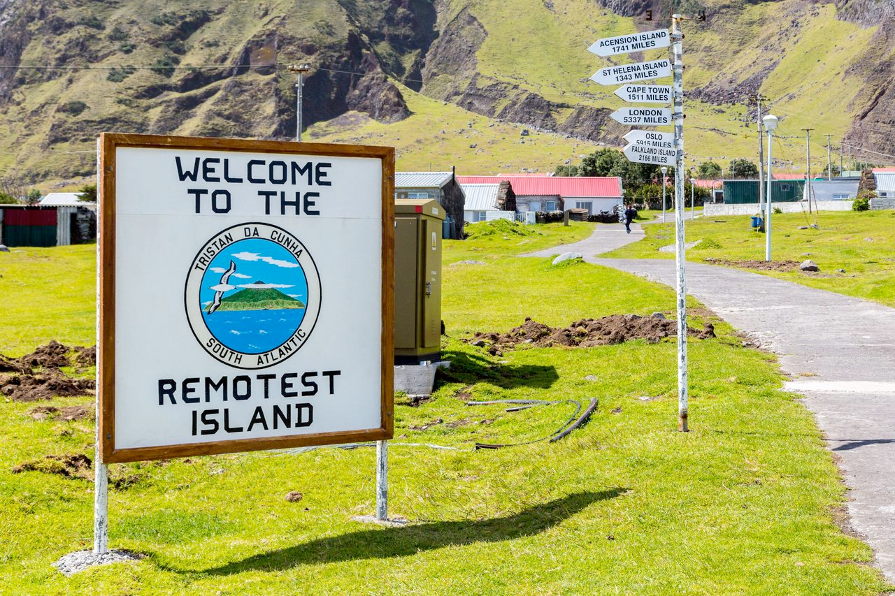
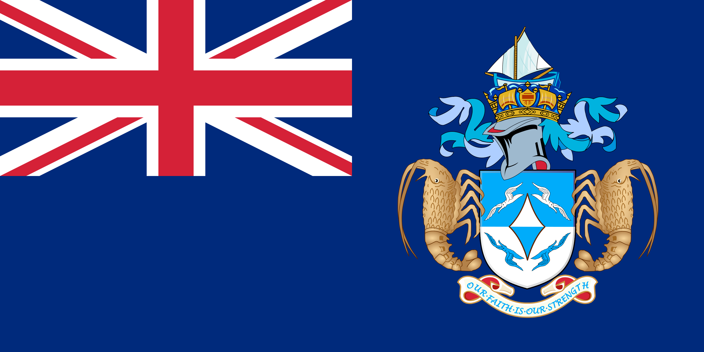
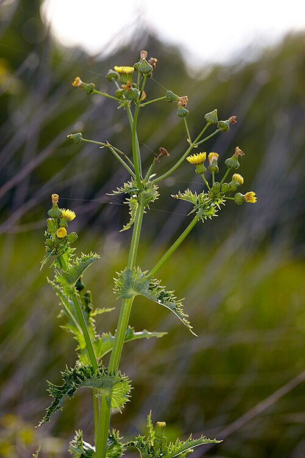

Our Faith is Our Strength

Geography
Tristan da Cunha is an extraordinary, isolated British Overseas Territory.
Its only permanent settlement is Edinburgh of the Seven Seas, which proudly serves as the sole town in the constituent territory of Saint Helena, Ascension and Tristan da Cunha.
The main inhabited island, Tristan da Cunha, is approximately 11 kilometers across and covers a rugged area of 98 square kilometers.
Political system
Life on the island is unique, operating smoothly with neither political parties nor trade unions.
The King holds the ultimate executive authority, which is officially represented on the territory by the governor of Tristan da Cunha.
Local governance is managed by the Island Council, which consists of eight elected and three appointed members, all of whom serve a three-year term.




Flora and Fauna
The archipelago's diverse collection of plants and animals often share a wide distribution across the South Atlantic and South Pacific Oceans.
Tristan is especially renowned for its remarkable wildlife, having been identified as an Important Bird Area by BirdLife International.
Visitors can spot 13 known types of breeding seabirds and two types of resident land birds that call the island home.
Historical places
St. Joseph Church is a Roman Catholic church and proudly holds the title of the most isolated Roman Catholic Parish anywhere in the world. It sits on a site that originally held a small chapel, which was later replaced by the current, larger church in the 1990s.
St. Mary's Church is an important religious building belonging to the Church of England. This beautiful structure was first built in 1923, under the direction of Rev. Martin Rogers, and was officially opened that July. The church was later renovated and extended in 1990 to accommodate the community.